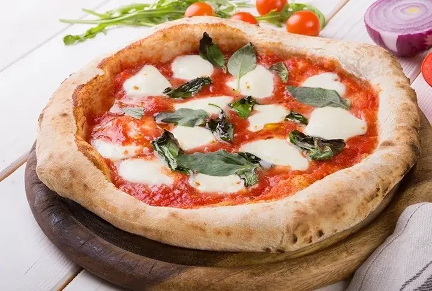
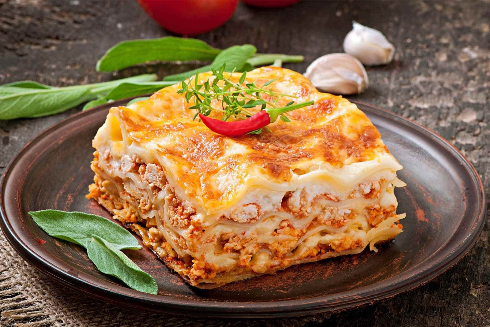
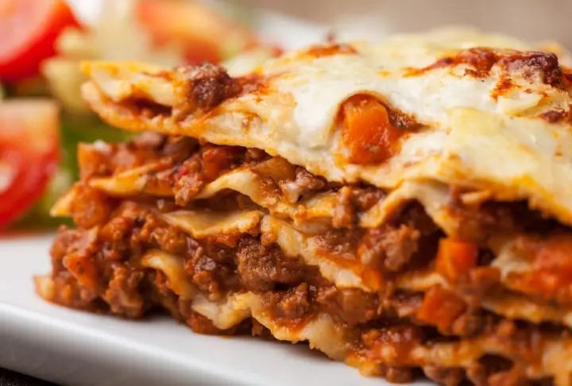
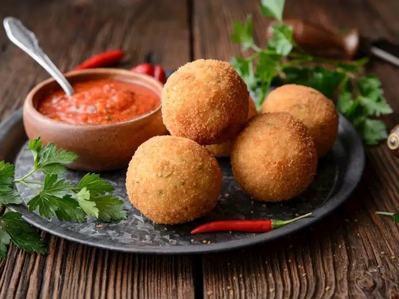
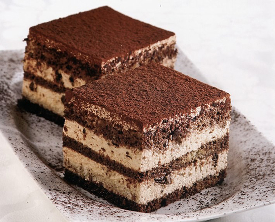
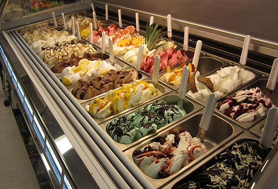

ÜLKELER
- Fransa
- İtalya
- Japonya
|
|
ÜLKELER
|
HAKKIMIZDA | İLETİŞİM | |||
Pizza (İtalyanca: [ˈpittsa], Napoliten: [ˈpittsə]), domates, peynir ve genellikle çeşitli diğer malzemelerle (mantar, soğan, zeytin, ananas, et vb.) yenen bir yemektir.Üstü genellikle yuvarlak,düz bir mayalı buğday bazlı hamur tabanından oluşan İtalyan kökenli bir yemektir. Geleneksel olaraktaş fırında yüksek sıcaklıkta pişirilir. Küçük bir pizzaya bazen pizzetta denir. Pizza yapan bir kişi pizzaiolo olarak bilinir.İtalya'da bir restoranda servis edilen pizza, dilimlenmeden sunulur ve bıçak ve çatal kullanılarak yenir. Ancak gündelik ortamlarda, elde tutularak yenmek üzere dilimler halinde kesilir. Pizza terimi ilk olarak 10. yüzyılda Campania sınırındaki Lazio'daki Güney İtalya kasabası Gaeta'dan bir Latin el yazmasında kaydedildi. Modern pizza Napoli'de icat
Pizza terimi ilk olarak 10. yüzyılda Campania sınırındaki Lazio'daki Güney İtalya kasabası Gaeta'dan bir Latin el yazmasında kaydedildi. Modern pizza Napoli'de icat edildi ve yemek ve çeşitleri o zamandan beri birçok ülkede popüler hale geldi. Dünyanın en popüler gıdalarından biri ve Avrupa, Kuzey Amerika ve Avustralasya'da yaygın bir fast food öğesi haline geldi; pizzacılarda (pizza konusunda uzmanlaşmış restoranlar),pizza teslimi yoluyla ve sokak yemeği olarak Akdeniz mutfağı sunan restoranlarda mevcuttur.Çeşitli gıda şirketleri, ev fırınında tekrar ısıtılmak üzere marketlerde dondurulabilecek hazır pişmiş pizzalar satmaktadır.
2017'de dünya pizza pazarı 128 milyar ABD dolarıydı ve ABD'de 76.000 pizzacıya yayılmış 44 milyar dolardı Genel olarak, 2 yaş ve üzerindeki ABD nüfusunun %13'ü herhangi bir günde pizza tüketmiştirAssociazione Verace Pizza Napoletana (Lafzen Gerçek Napoliten Pizza Derneği) 1984 yılında kurulmuş, merkezi Napoli'de bulunan ve geleneksel Napoliten pizzasını tanıtmayı amaçlayan kar amacı gütmeyen bir kuruluştur. Napoli pizza, 2009 yılında İtalya'nın talebi üzerine Avrupa Birliği'ne Geleneksel Özellik Garantili yemek olarak edildi ve 2017'de yapım sanatı UNESCO'nun somut olmayan kültürel miras listesine dahil edildi.
Ünlü Mekanlar:Casa Manco, Pizzium - Roma via Piave, Pizza ZizzaLazanya, peynir, domates sosu veya ragù (bir tür et sosu) ile yapılan İtalya asıllı bir yemektir. Türkiye'de benzeri su böreğinin domates soslu ve daha sulu pişirilmiş bir çeşidi denilebilir. Farklı katmanlarda ve farklı şekillerde yapılabilen yemeğe, ricotta veya mozzarella peyniri eklenebilmektedir."Lazanya" sözcüğü, başta pişirme kabının adı olsa da, günümüzde sadece yemeğin adına lazanya denilmektedir. İngilizce konuşan ülkelerde "lasagne" sözcüğü kullanılsa da Amerika'da "lasagna" olarak geçmektedir.
Lazanya geleneği Emilia Romagna'da ortaya çıkmıştır ve oradan tüm dünyada İtalyan mutfağının sembollerinden Anavatanı İtalya olan ve dalgalı makarna katmanlarından yapılan, sosunun adını (Bolognese) Bologna’dan alan Lazanya; İtalyanca’da Lasagne, İngilizce’de Lasagna olarak bilinir. Lazanya adının Yunanca tencere anlamına gelen “Lasanon” kelimesinden türediği düşünülmektedir. Yani Lasagna kelimesi yemeğin kendisini değil, piştiği kabı işaret etmektedir. 1390 yılında İngilitere’de yayımlanan ilk yemek kitabı olan The Forme of Cury lazanya tarifi de içermektedir.biri haline gelmiştir.
Amerikan lazanyası—çoğu İtalyan Amerikalının kökeni Güney İtalya'ya dayandığından genellikle güney terimi kullanılır—Napoli şablonunu takip etme eğilimindedir , ancak birçok çeşidi vardır. Örneğin vejetaryen bir versiyonda et ıspanakla ve bazen biber ve kabak gibi diğer sebzelerle değiştirilir. İtalya'da lasagne verdi olarak bilinen erişteler , bir bileşen olarak ıspanakla yapılır.Lazanya yapmak, diğer makarnaların çoğundan daha fazla emek gerektiren bir işlemdir.
Ünlü Mekanlar: OThat's Amore, Ristorante Santa Cristina al Quirinale, Klass Restaurant Arancini ( İngiltere'de / ˌ ær ən ˈ tʃ iː n i / , ABD'de / ˌ ɑːr -/ , İtalyanca : [ aranˈtʃiːni] ; Sicilyalı: [aɾanˈtʃiːnɪ, -ˈdʒiː-] ; tekil adı : arancino ), arancine ( tekil adı : arancina ) olarak da bilinir , içi doldurulup ekmek kırıntılarıyla kaplanan ve kızartılan İtalyan pirinç toplarıdır . Sicilya mutfağının temel gıdasıdır . En yaygın arancini dolguları, ragù (düşük sıcaklıkta domates sosu ve baharatlarla yavaş pişirilen et veya kıyma), mozzarella veya caciocavallo peyniri ve genellikle bezelye ile doldurulmuş al ragù veya al sugo ve prosciutto ve mozzarella veya beşamel sos ile doldurulmuş al burro veya ô burru'dur .Dolguları ve şekilleri bakımından farklılık gösteren bir dizi bölgesel çeşidi mevcuttur. Doğu Sicilya'da, özellikle Catania ve Messina gibi şehirlerde üretilen Arancini al ragù , Etna yanardağından esinlenerek konik bir şekle sahiptir .
Ünlü Mekanlar: GluFree Bakery, Antica Focacceria San Francesco, A'VucciriaTiramisu'nun 1960'ların sonu veya 1970'lerin başında icat edildiği anlaşılıyor ancak tam olarak nerede ve ne zaman icat edildiği belirsiz.Bazıları tarifin yumurta sarısı ve şekerden yapılan daha basit bir tatlı olan sbatudin'den esinlenerek yapıldığına inanıyor. Diğerleri ise bunun başka bir yemek olan dolce Torino'dan kaynaklandığını iddia ediyor .Tiramisu tarifi 1960'lardan önceki yemek kitaplarında bulunmuyor. 1978'de yayınlanan bir Sydney Morning Herald restoran köşesinde bahsediliyor. 1970'lerin ansiklopedilerinde ve sözlüklerinde bahsedilmiyor, ilk kez 1980'de bir İtalyanca sözlükte ve 1982'de İngilizcedeyer alıyor.Veneto bölgesinin yemeklerine adanmış 1983 tarihli bir yemek kitabında bahsediliyor .
Restoran işletmecisi Ado Campeol'un (1928–2021) ölüm ilanlarında, tiramisunun 24 Aralık 1969'da Treviso'daki restoranı Le Beccherie'de eşi Alba di Pillo (1929–2021) ve pasta şefi Roberto Linguanotto (1943–2024) tarafından icat edildiği bildirilmiştir. Yemek, 1972'de menüsüne eklendi.Temmuz 2024'teki ölümünden sonra, Le Beccherie restoranı Linguanotto'yu tiramisunun yaratıcısı olarak gösterdi.Tiramisunun afrodizyak etkileri olduğu ve Accademia Del Tiramisù'nin açıkladığı gibi, 19. yüzyılda Treviso genelevinin bir hanımı tarafından "eşlerine döndüklerinde evlilik görevleriyle ilgili yaşadıkları sorunları çözmek" amacıyla uydurulduğu iddia edilmektedir .
Ünlü Mekanlar: Two Sizes, Ristorante Ai Cocci, Da Cicero

Gelato, İtalyancada "donmuş" anlamına gelir ve ilk olarak 16. yüzyılda yaratılan İtalya'ya özgü
bir dondurulmuş yiyecektir.
Tarihçiler bunu ilk kimin icat ettiğinden emin değiller ancak hikayenin en popüler
versiyonlarından biri, Floransalı
Bernardo Buontalenti'nin modern dondurmanın bir biçimini yaratmasıdır. Catherina dei Medici'nin
sarayını lezzetli dondurulmuş
yiyeceğiyle etkilemiştir. Buradan İtalya'ya ve ardından Avrupa'nın geri kalanına yayılmıştır.
Mağazalar açılmaya başlamış ve gelenek
nesiller boyunca babadan oğula geçmiştir. Bu, bugün de tüm dünyada devam etmektedir.Dondurma
Amerika Birleşik Devletleri'ne 1770'te geldi.
Amerika'ya İtalyan asıllı Giovanni Biasiolo tarafından tanıtıldı. Ne yazık ki, el kranklı
dondurucunun icat edildiği ve dondurmanın
dondurmayı gölgelediği zaman da aynı zamana denk geliyordu. Aslında, tarihçiler bu İtalyan
tatlısı hakkında 1900'lere kadar
pek bir şey görmediler. Şimdi sadece İtalya ve Amerika Birleşik Devletleri'nde değil, tüm
dünyada inanılmaz derecede popüler hale geldi!